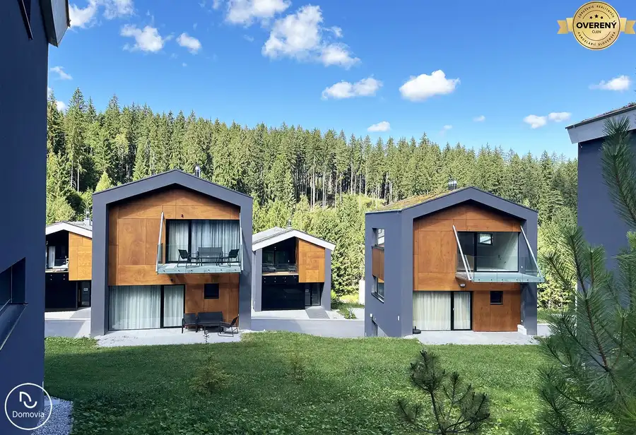
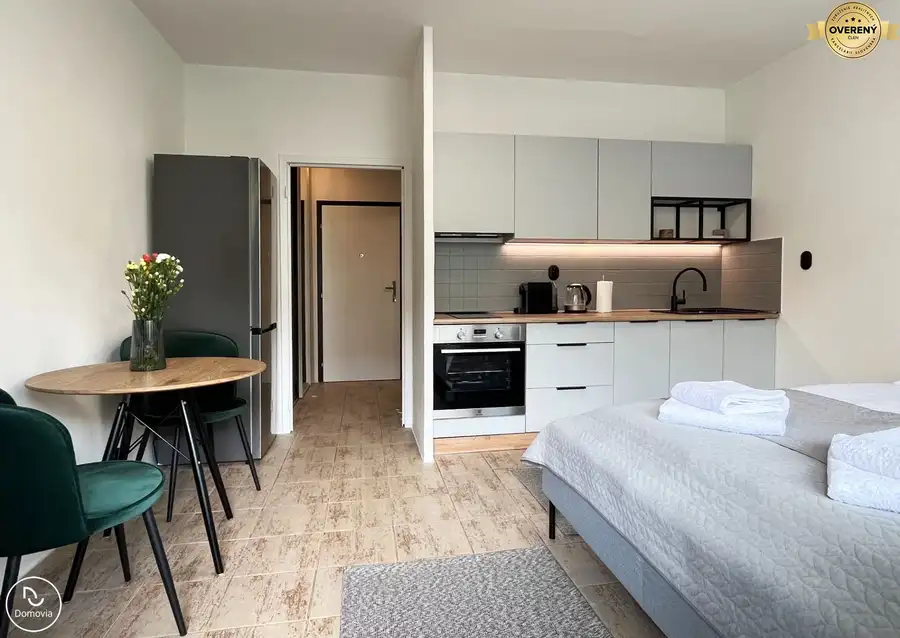
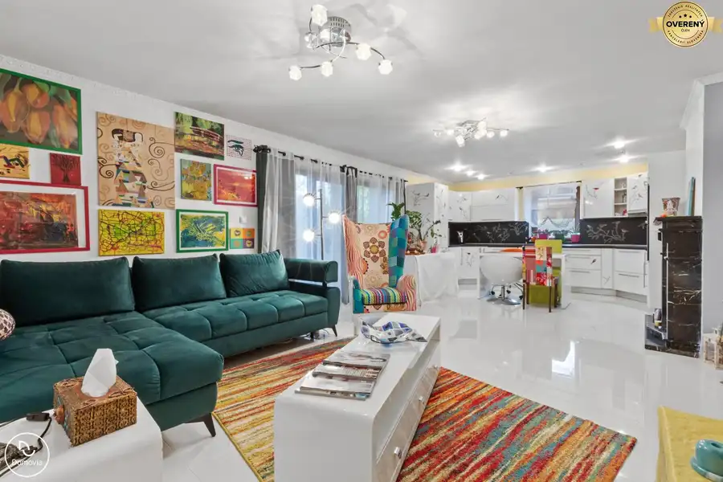

Exkluzívne | Veľkorysý 2i byt s loggiou Bosakova, Petržalka
Petržalka, Bratislava
- Dispozícia2-izbový
- Plocha74 m²
- Poschodie4. z 19
- Stavpo rekonštrukcii
O nehnuteľnosti
Realitná kancelária Domovia ponúka exkluzívne na prenájom kompletne zariadený 2-izbový byt s veľkorysou loggiou v obľúbenej lokalite Bratislavy na začiatku Petržalky.
Byt sa nachádza v bytovom dome z roku 2011 s 24/7 recepciou, ktorý ponúka komfortné bývanie v bezprostrednej blízkosti centra mesta. Byt je kompletne zariadený vrátane nábytku, postele, vstavaných skríň, gauča a všetkých potrebných spotrebičov (chladnička s mrazničkou, indukčná varná doska, elektrická rúra, umývačka riadu, televízor, práčka a sušička). K príjemnému využitiu loggie prispieva aj pohodlné ratanové sedenie.
Vďaka výbornej lokalite, praktickej dispozícii, veľkorysej výmere a kompletnému zariadeniu je byt ideálnou voľbou na komfortné bývanie pre jednotlivca alebo pár.
- Bosákova ulica, začiatok Petržalky
- bytový dom (2011)
- 24/7 recepcia
- 4/19 poschodie, 3x výťah
- celková výmera 74m² (64m² interiér + loggia)
- praktické dispozičné riešenie s veľkým množstvom úložného priestoru
- východne orientovaný
- klimatizácia v obývacej izbe a spálni
- kompletne zariadený nábytkom vrátane spotrebičov
- moderné a udržiavané spoločné priestory
- výborná dostupnosť MHD (autobus / električka)
V pešej dostupnosti sa nachádza kompletná občianska vybavenosť – Billa, Lidl, trhovisko, lekáreň, pošta, poliklinika, reštaurácie, kaviarne, MHD vrátane električky.
Voľné od 1.11.2026
Cena: 700€ nájom + 300€ náklady na služby a energie
Vratný depozit: 1000€
Jednorázový poplatok pre realitnú kanceláriu 700€.
Ak hľadáte moderné a pohodlné bývanie v atraktívnej lokalite, neváhajte nás kontaktovať a dohodnúť si obhliadku.
Kontakt na makléra:
Lukáš Truba
Tel.:
E-mail.:
Prevediem Vás cestou k vášmu novému domovu moderným, odborným a transparentným spôsobom. Teším sa na spoluprácu.
Fotografie a text inzerátu sú autorským dielom realitnej kancelárie Domovia s. r. o.
Parametre
| Úžitková plocha | 74 m² |
|---|---|
| Poschodie | 4/vyššie poschodie |
| Počet poschodí | 19 |
| Stav | po rekonštrukcii |
| Kúpeľňa | sprchovací kút |
| Lódžia | áno - 1 |
| Výťah | áno |
| Zariadenie | zariadený |
| Zateplený objekt | áno |
| Klimatizácia | áno |
| Okná | plastové |
| Orientácia | východná |
| Novostavba | áno |
| Dátum zverejnenia | 18. 9. 2026 |
Kde to je
Mohlo by Vás zaujímať

Apartmány10 127 000 €Posledné voľné apartmány priamo od developera – Malinô Brdo, Hrabovo Ružomberok Ponúkame na predaj posledné jednotky chalet apartmánov v novovybudovanom projekte priamo pod zjazdovkou lyžiarskeho strediska Malinô Brdo v…
Byt10 1 000 €Krátkodobý prenájom apartmánu s parkovaním v Bratislave Petržalka, Bratislava 28 m² Ponúkame na krátkodobý prenájom (týždeň, 1 mesiac, 2 mesiace) novo zrekonštruované, štýlové štúdio s balkónovým priestorom, plne vybavenou kuchyňou a…
Rodinné domy10 320 000 €Exkluzívne | Na predaj rodinný dom pri Veľkom jazere v Rovinke Rovinka 4-izbový127 m² Realitná kancelária Domovia ponúka exkluzívne na predaj 4-izbový tehlový rodinný dom v unikátnej lokalite pri jazere Veľké Košariská v Rovinke. Dom…